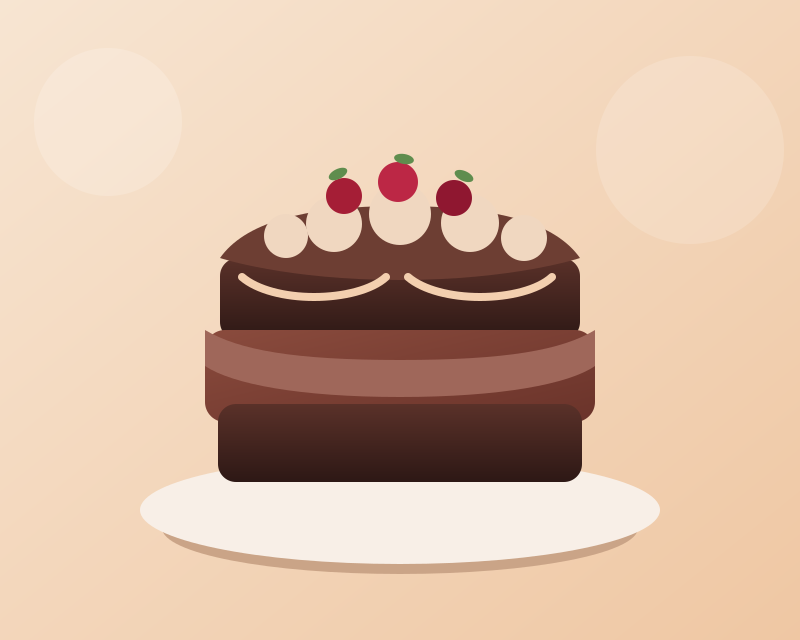

Weekend Bake Project
Chocolate Cake
A soft, rich chocolate cake layered with silky frosting and built for beginners who want a reliable, crowd-friendly dessert.

Cooking Progress
Step Tracker
Time Left
45:00
Start cooking to guide your way through 6 steps.
What You Need
Ingredients
- 1 3/4 cups all-purpose flour
- 3/4 cup cocoa powder
- 2 cups caster sugar
- 2 tsp baking powder
- 2 large eggs
- 1 cup whole milk
- 1/2 cup vegetable oil
- 1 cup hot coffee
How To Make It
Instructions
- Preheat your oven to 180 C and grease two 8-inch cake tins.
- Whisk the flour, cocoa, sugar, and baking powder in a large mixing bowl.
- Add eggs, milk, and oil, then mix until the batter becomes smooth.
- Pour in the hot coffee and stir gently to loosen the batter.
- Divide between tins and bake for 30 to 35 minutes until springy.
- Cool completely, frost generously, and slice for serving.